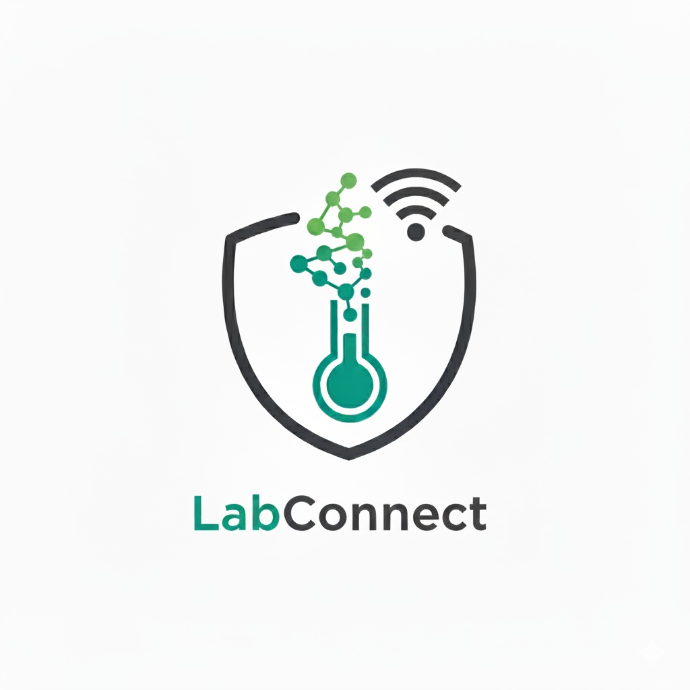

Bruno Henrique Oliveira
Estudante de Desenvolvimento de Sistemas na FATEC-Jacareí, com grande interesse em tecnologia, desenvolvimento de software e aprendizado contínuo. Explore meus projetos e atividades abaixo!
Projetos Acadêmicos
-
 InnovatechWebsite institucional para um curso sobre metodologias ágeis (Scrum).Participação: Desenvolvimento de protótipo, estruturação de páginas e criação de certificado do projeto.
InnovatechWebsite institucional para um curso sobre metodologias ágeis (Scrum).Participação: Desenvolvimento de protótipo, estruturação de páginas e criação de certificado do projeto. -
 NutriTechAplicação para monitoramento nutricional e controle de hábitos saudáveis.Participação: Responsável pela criação da prototipagem inicial, implementação da lógica do sistema e desenvolvimento do frontend
NutriTechAplicação para monitoramento nutricional e controle de hábitos saudáveis.Participação: Responsável pela criação da prototipagem inicial, implementação da lógica do sistema e desenvolvimento do frontend -
 Cloud.ioSistema de monitoramento climático com alertas para a região de Furnas/MG.Participação: Atuação na criação da interface, implementação de APIs de mapas climáticos e aperfeiçoamento do design
Cloud.ioSistema de monitoramento climático com alertas para a região de Furnas/MG.Participação: Atuação na criação da interface, implementação de APIs de mapas climáticos e aperfeiçoamento do design -

LabConnectSistema para monitoramento de temperatura em laboratórios com gráficos e alertas configuráveis.Participação: Desenvolvimento da estrutura principal do frontend e participação na criação do dispositivo IoT para medição de temperatura
Outras Atividades
Habilidades
- HTML5
- CSS3
- JavaScript
- TypeScript
- Node.js
- MongoDB
- pgAdmin + SQL
- React
- Git & GitHub
Contato
Acesse minhas redes sociais: